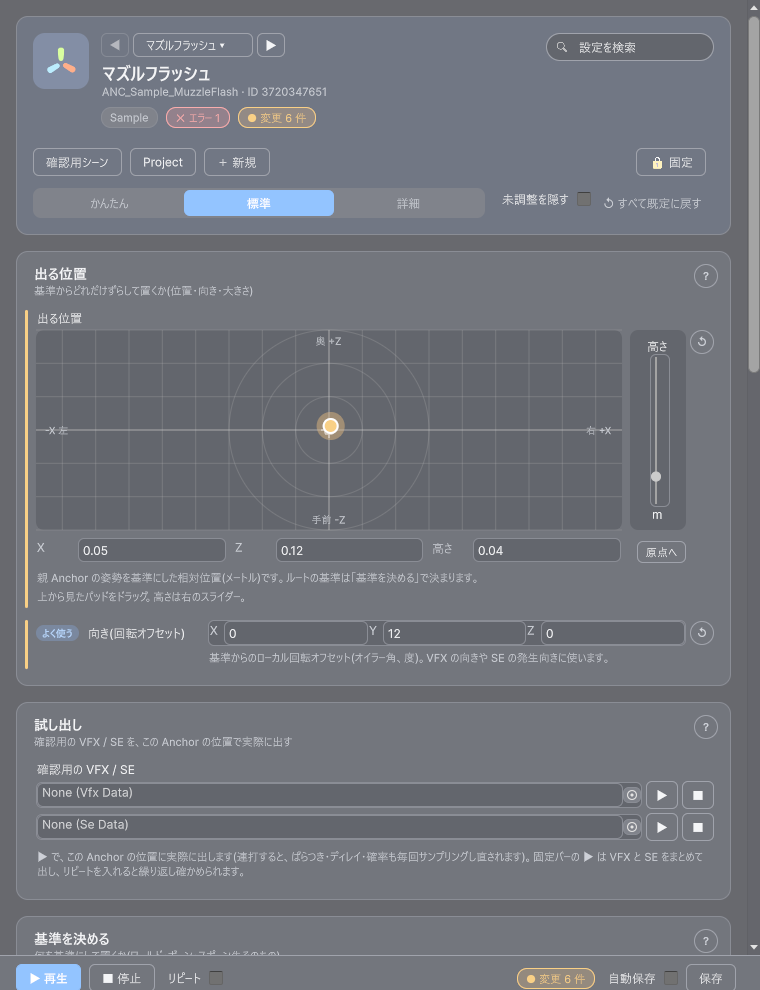
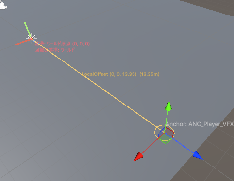

最終更新日: 2026-10-13
Anchor は「エフェクトや効果音をどこに・いつ・どう出すか」だけを決めるデータです。「何を出すか」は持ちません。1 つ作っておけば、いくつもの VFX / SE から同じ位置設定を使い回せます。
Tools > D-Drive > Editors > Anchor（Anchor Editor）「キャラクターの右手にエフェクトを出す位置」を作って、実際に出してみる流れです。
Tools > D-Drive > Generate > Anchor プレハブを生成 でできた AnchorRig を、Project から Hierarchy へドラッグして置く（キャラクターがいる場合はその子に置き、中の Anchor_Main を右手あたりまで動かす）Tools > D-Drive > Generate > 選択した AnchorRig から Anchor を一括生成。Anchor データが 1 つでき、Anchor Editor に入ります
Spatial を Anchor にし、Anchor Id に同じ Anchor を選べば、エフェクトと音が同じ位置から出ます。
| 方法 | 手順 | 向いている場面 |
|---|---|---|
| 新規作成 | Anchor Editor 上部の「＋ 新規」、または Asset Browser の「新規」ボタンで種別に Anchor を選ぶ。Anchor Editor でスポーン先（キャラクター）を指定し、「Path を一覧から選ぶ」でボーンを選んで位置を調整 | ゼロから作る |
| Hierarchy の Transform から作る | シーンでボーンの下に空のオブジェクトを置いて位置を決め、それを選択したまま Anchor Editor の「ヒエラルキーから作る」カードの「選択した Transform から作成」（または Tools > D-Drive > Generate > 選択した Transform から Anchor を作成）。親のボーン名と、そこからのずれが自動で入ります。作った後、その空オブジェクトは消して構いません | 既存のボーンやモデルの階層をそのまま使いたい |
| AnchorRig から一括で作る | AnchorRig（AnchorPoint の集まり）を選択して「AnchorRig から一括生成」。AnchorPoint 1 つにつき Anchor データが 1 つでき、AnchorPoint の親子関係はそのまま Anchor の入れ子になります。ランダム設定も写されます | SceneView でドラッグして決めた目印をデータ化したい |
VFX / SE の埋め込み Anchor から作るには、VFX Editor の「埋め込みをアセット化」（SE は Inspector の「埋め込み Anchor をアセット化」）を押します。埋め込みの値は残り、Anchor アセット欄に新しいデータが入ります。
設定は、やりたいことごとの「カード」に並びます。上の「かんたん / 標準 / 詳細」で表示する欄の量を切り替え（かんたん = 出る位置と試し出しだけ）、右上の検索で設定を探せます。ウィンドウ下の固定バーに ▶ 再生・■ 停止・リピート・変更件数・自動保存・保存があります。▶ は「確認用の VFX と SE をまとめて出す」ボタンで、リピートを入れると散らばり方・ディレイ・確率を繰り返し確かめられます。
上から見た 2D パッドの点をドラッグすると、位置（X = 横・Z = 奥行き）が変わります。右のスライダーが高さ（Y）です。1m ごとの格子と 1 / 2 / 3m の距離の輪が出ます（Shift を押しながらで 0.25m 刻み）。下の数値欄に直接入力もでき、「原点へ」で X / Z を 0 に戻せます（Ctrl+Z で戻せます）。範囲の外に出した値は点が端に寄り、警告色になります。
ルートの基準が World 以外のとき、親 Anchor があるときは、位置は「基準（または親の姿勢）からの相対（メートル）」になる、という注記がパッドの下に出ます。向き（回転オフセット）は同じカードの「向き」、大きさは詳細モードの「大きさ（スケール）」、位置の数値入力は詳細モードの「位置のオフセット（全設定）」です。

VFX Editor でも、Anchor アセットを設定した VFX なら同じ表示・同じハンドルで Anchor データを動かせます。どちらから動かしても同じ Anchor データが書き換わります。
位置のばらつき・向きのばらつき・大きさのばらつき・待ち時間・待ち時間のばらつき・出る確率。意味は下の「設定項目」の表のとおりです。問題がある欄（確率が 0・ディレイが長すぎる・大きさのばらつきが負など）は、その欄の下に警告が出ます。
Hierarchy でボーン配下の空オブジェクトや AnchorPoint を選んで「選択した Transform から作成」、AnchorRig を選んで「AnchorRig から一括生成」。作った Anchor はそのままこのウィンドウで開きます（詳しくは上の「作り方（3 通り）」）。
表示名・カテゴリ・説明・タグ・担当者・仕様書 URL など、一覧での見え方とメモ。詳細モードでは動作の取り決め（Flags）・イベント（Events）も出ます。
| 項目 | 説明 |
|---|---|
| Parent（親 Anchor） | 親の Anchor。入れておくと「親で決まった位置」を基準に、この Anchor のオフセットを積みます。空ならルート |
| Space / Path（基準の種類 / 探す名前） | ルートだけで有効。基準の決め方と探す名前（VFX の Anchor と同じ）。子では無視されます（親から引き継ぐ） |
| Local Offset / Local Euler / Local Scale（位置 / 向き / 大きさ） | 基準からの位置のずれ（m）・向き（度）・大きさの倍率 |
| Follow Rotation / Detach On Stop | ルートだけで有効。回転に追従するか／基準が消えた後も残すか |
| Position Jitter Radius（位置のばらつき） | 出す位置をこの半径の球の中でランダムに散らす。0 で無効 |
| Euler Jitter（向きのばらつき） | 向きを ± この角度の範囲でランダムに変える |
| Scale Range（大きさのばらつき） | 大きさの倍率をこの範囲（最小, 最大）でランダムに。効果音には関係ありません |
| Delay Sec / Delay Jitter Sec（待ち時間 / ばらつき） | 出すまでの待ち秒数と、そこに足すランダム秒数。入れ子では親子の値が足し合わされます |
| Spawn Chance（出る確率） | 出す確率（0〜1）。0.3 なら 3 割の確率で出ます。入れ子では掛け合わされます。0 だと出ません（検証に注意が出ます） |
| やりたいこと | 設定 |
|---|---|
| 右手の斬撃エフェクトを、少し手前にずらして出す | スポーン先にキャラクター、「Path を一覧から選ぶ」で右手のボーン（または ★Anchor_RightHand）→ パッドか SceneView のハンドルで手前にドラッグ。回転にも追従させるなら「回転にも追従する」を ON |
| ヒット時の火花を毎回少し違う場所・向きで出す | 位置のばらつき = 0.2〜0.5、向きのばらつき = (0, 180, 0)。リピートを入れて ▶ でばらつきを確認 |
| 爆発の後、少し遅れて煙を出す | 煙用の Anchor を作り、待ち時間 = 0.3。爆発用と煙用で別の Anchor にすると、それぞれ位置も変えられます |
| たまにしか出ないキラッとした演出 | 出る確率 = 0.2（5 回に 1 回） |
| 銃口 → 銃口の先のマズルフラッシュ、のように親子で位置を決める | 銃口の Anchor を作り、もう 1 つ Anchor を作って親 Anchor に銃口を指定、位置のオフセットで前方へ。銃口の位置を直せば先の Anchor も一緒に動きます |
| 同じ位置設定をいくつもの VFX / SE で使う | Anchor を 1 つ作り、各 VFX の「Anchor アセット」・各 SE の「Anchor Id」で同じものを選ぶ |
| すでに VFX の中で調整した埋め込み Anchor を使い回したい | VFX Editor の「埋め込みをアセット化」 |
| 表示 | 対処 |
|---|---|
| Parent が登録されていません | 親に指定した Anchor が削除されています。親 Anchor を選び直す |
| Parent が循環しています | 親をたどると自分に戻る設定になっています。どれかの親 Anchor を外す |
| Space=BoneName/NamedObject ですが Path が未設定です | 「Path を一覧から選ぶ」でボーンを選ぶ |
| 子 Anchor では Space/Path は無視されます | 子に基準を設定しても効きません。ルート側で設定する |
| SpawnChance が 0 のため何も生成されません | 意図した設定なら説明欄に理由を書く。そうでなければ 1 に戻す |
| AnchorId が設定されているため、埋め込みの Anchor は無視されます | VFX / SE 側の埋め込み Anchor に値が残っています。問題はありませんが、混乱するなら埋め込みを既定値に戻す |